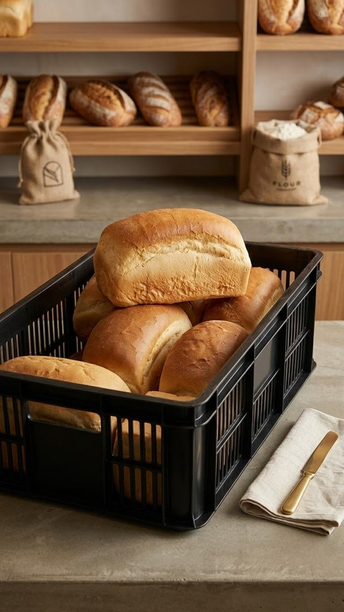

La Boulangerie Lomoto prépare pain et viennoiseries avec des ingrédients de qualité, livrés chaque jour à nos Dépositaires et Mamans partenaires.
Je suis Dépositaire / Maman — Commander
Une boulangerie locale qui approvisionne un réseau de dépositaires et de mamans revendeuses partout dans la ville. Fraîcheur, régularité et proximité sont au cœur de notre travail quotidien.
Chaque jour, notre équipe prépare pain et petits pains en quantité adaptée aux demandes reçues, puis les conditionne en bacs pour nos Dépositaires et Mamans partenaires — plutôt qu'une production figée à l'avance, nous ajustons au fil des commandes pour limiter le gaspillage et garder un pain toujours frais.
Une production quotidienne pour garantir un pain toujours frais chez nos partenaires.
Un savoir-faire soigné à chaque fournée, du pétrissage à la cuisson, pour un pain régulier et fiable.
Des Dépositaires et Mamans fidèles, livrés selon un cycle régulier et fiable.
Une équipe joignable directement pour toute question sur vos commandes.
Une question, une adresse à vérifier avant votre inscription, ou tout autre sujet ? Contactez-nous directement.
Du lundi au samedi, 6h00 – 17h00.
Téléphone : +243 899 804 444
Email : boulangerie.lomoto@gmail.com
Kinshasa, République démocratique du Congo
Passez votre demande de commande de bacs directement depuis ce site — notre équipe la traite ensuite avec vous.
Passer une demande de commande